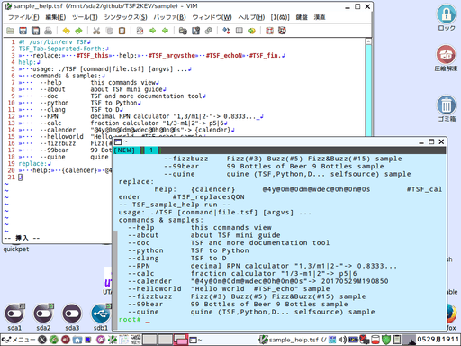

「TSFdoc」は「TSF2KEV」を用いたドキュメントジェネレーターです。
version(branch):20170528U134416 modify:20170630F051340(執筆途中です)
⓪-2．インストール/アンインストール＆セットアップ
gitでリポジトリ「https://github.com/ooblog/TSF2KEV.git」を「Clone」するか、
「https://github.com/ooblog/TSF2KEV/archive/master.zip」を「Download ZIP」して展開すると、
「TSF2KEV」フォルダが作成されます。
- プログラミング言語「TSF_Tab-Separated-Forth」開発中。
- https://github.com/ooblog/TSF2KEV
VimでTSFを編集する場合は「vimsyntax/tsf.vim」を「~/.vim/syntax/tsf.vim」にコピー。
VimでKEVを用いた漢直入力などをする場合は「メニュー→編集(E)→起動時の設定(S)」で「~/.vimrc」を開いて「filetype=tsf」や「:!TSF %」を追記。
syntax on
au BufRead,BufNewFile *.tsf set filetype=tsf
autocmd BufNewFile,BufRead *.tsf nnoremap <F5> :!TSF %<CR>
command KEV2tsf :source ~/TSF2KEV/KEV2/kanedit.vim
Vimエディタでの設定が成功するとシンタックスが着色されるはずです。
